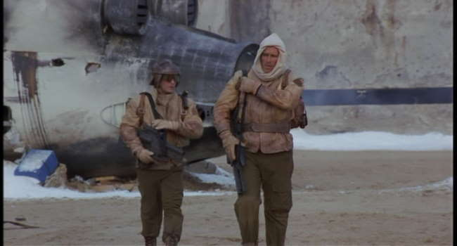
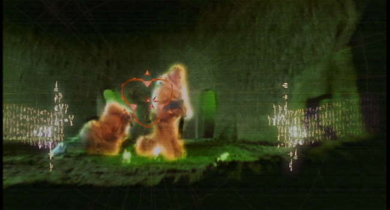
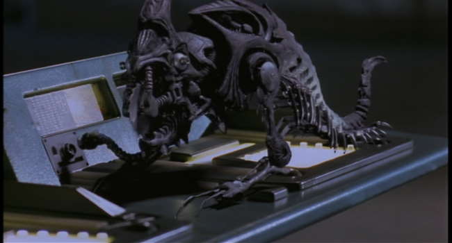

Movie review by : SFAM
Year : 1995
Directed by : Christian Duguay
Written by : Philip K. Dick (story), Dan O'Bannon & Miguel Tejada-Flores (screenplay)
Degree of Cyberpunk visuals : Medium
Correlation to Cyberpunk themes : Medium
Rating : 5/10
Key cast members :
Overview: Screamers is a low budget near future outer-space movie with some cyberpunk elements in it. We get all powerful corporations and some interesting android/robot self-replicating development. While it has some serious story issues, and doesn't always have the best acting or FX, there's still enough here to make it pretty interesting, especially if you're a fan of RoboCop star, Peter Weller.

The Story: Screamers takes place in a dystopic near future (2078)e environment, where mining colonies on remote planets have been at war with the N.E.B. Corporation for the past 20 years. After a new substance that made space flight possible, called Berynium, was discovered, the N.E.B. Corporation sent out mining teams to the planet "Sirus 68" to mine the Berynium, but unfortunately, it was discovered that the Berynium was accompanied by massive does of radiation. The miners and scientists on the planey Serius 68 revolted, and soon a larger alliance was formed to fight the all-powerful N.E.B. Corporation.
The Visuals: Screamers is a cross between Alien inside visuals and a desert-like Road-Warrior setting (without the punk stuff), or perhaps better said, a Pitch Black setting. Orange is the color du jour. In general, the look and feel of the internal set designs are far less realistic than the outside world. Some of the inside sets would look right at home on a sci-fi TV series. The creatures are pretty low budget too.
The Believability Factor: Although originally based on a Philip K. Dick short story, there are enough problems with the story here that cause you to pause. In addition to some real whoppers regarding the overall plot (for instance, if humans could build adaptive learning robots, why didn't they just get the robots to mine the radio-active Berynium?), and some serious acting issues on the part of some of the minor characters. Still, both Peter Weller (RoboCop) and Jennifer Rubin are good enough to make this worth watching. More so, the evolution of the robots, while often "magical", is done at least well enough to make you take pause and actually have a deep thought or two about it.

The Bottom Line: I'm really torn in deciding whether to give Screamers a 5 or a 6 star rating. This is not a great movie, but there's just enough here to make watching it worthwhile. If you're in to dystopic futures, especially ones involving outer space, you'll probably want to see this. If you're in to developing AI type movies, this also should hold interest for you. In terms of "cyberpunkness", the same thing applies ? there's just enough here to include it as watchable cyberpunk, although you'd be find just calling this a space-sci-fi movie.